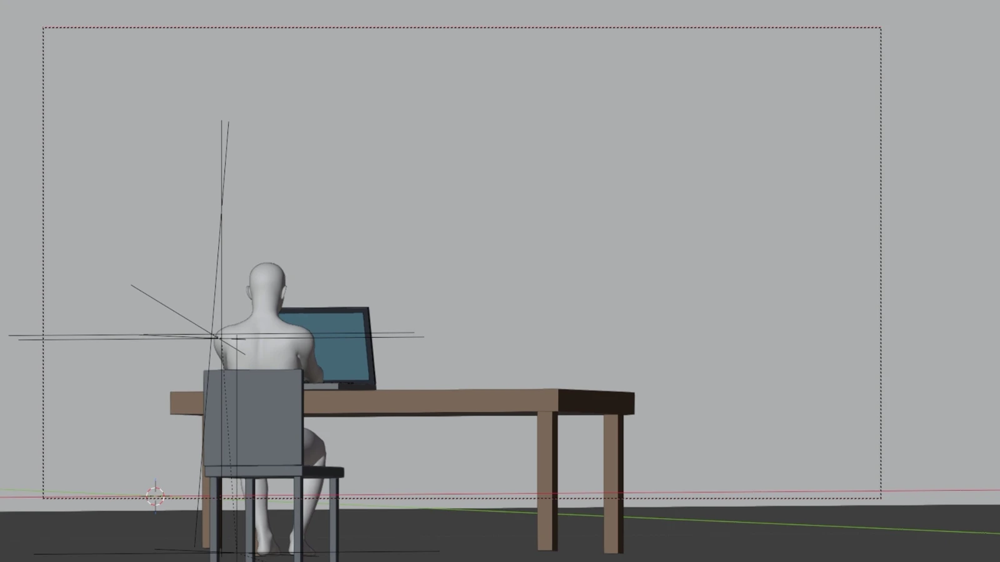

PRODUCT IMAGE · VISUAL DIRECTION
Product Styling.
기존 향수 제품 이미지에 핑크·퍼플 톤의 공간과 빛을 더했습니다. 제품 사진과 무드 레퍼런스를 함께 사용해 장면을 만들고, 짧은 영상으로 연결했습니다.
Approach 제품 원본 + 무드 레퍼런스 → AI 이미지·영상
기존 제품 사진과 무드 이미지를 활용한 개인 제작 사례입니다. 브랜드 공식 의뢰 작업은 아닙니다.
SCENE DESIGN · AI VIDEO · EDITING
From scene to film.
장면에 따라 3D 구성, AI 이미지·영상 제작, 편집을 조합했습니다. 창가 장면부터 제품 연출, 패턴 변경, 모션 활용, 숏폼까지 실제 작업과 함께 제작 방식을 소개합니다.
BLENDER · SCENE DESIGN · AI VISUAL
창가에서 바라본 저녁의 풍경입니다. 인물과 공간을 Blender에서 구성하고, AI로 비주얼 장면을 연출해 만들었습니다.
FROM SCENE TO IMAGE



비주얼 표현은 기획 기반으로 이미지 작업후 AI로 분위기를 표현했습니다. 완성 영상 사이에 실제 Blender 화면이 함께 들어 있어 제작 단계를 확인할 수 있습니다.
제작 영상에서 발췌한 대표 장면입니다. 서로 다른 시점의 3D 화면과 AI 완성 장면을 함께 구성했습니다.
PRODUCT IMAGE · VISUAL DIRECTION
기존 향수 제품 이미지에 핑크·퍼플 톤의 공간과 빛을 더했습니다. 제품 사진과 무드 레퍼런스를 함께 사용해 장면을 만들고, 짧은 영상으로 연결했습니다.
Approach 제품 원본 + 무드 레퍼런스 → AI 이미지·영상
기존 제품 사진과 무드 이미지를 활용한 개인 제작 사례입니다. 브랜드 공식 의뢰 작업은 아닙니다.
IMAGE EDITING · IMAGE TO VIDEO
원본 화보에서 흰 침구를 호피무늬로 바꾼 작업입니다. 변경할 소재와 패턴을 정해 이미지를 수정하고, 완성된 이미지에 움직임을 더했습니다.
Tools Qwen 기반 이미지 편집 · AI 영상
기존 화보를 활용한 개인 제작 사례입니다. 원본 촬영은 본인의 작업 범위에 포함하지 않습니다.
MOTION REFERENCE · AI VIDEO
기존 영상의 움직임을 참고해 인물을 변경한 비교 작업입니다. 원본과 결과를 나란히 놓고 움직임과 장면의 흐름을 살펴볼 수 있습니다.
Approach원본 모션 참고 → 인물 변경 → 비교 확인
원본 영상의 모션을 활용한 개인 제작 테스트입니다.
CLIENT WORK · CONCEPT · AI VIDEO · EDITING
향기 때문에 주변의 반응이 과장되게 달라진다는 설정을 B급 유머로 풀어낸 페르니코리아 숏폼입니다. 프리랜서 의뢰로 진행했으며, 콘셉트 기획부터 AI 영상 제작과 편집까지 직접 작업했습니다.
향을 직접 전달할 수 없는 영상에서, 주변 사람들이 달라지는 반응을 과장된 상황으로 표현했습니다. 상황 설정과 반전, 마지막 제품 소개가 한 흐름으로 이어지도록 기획하고 편집했습니다.
CONTINUE EXPLORING